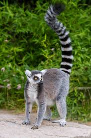
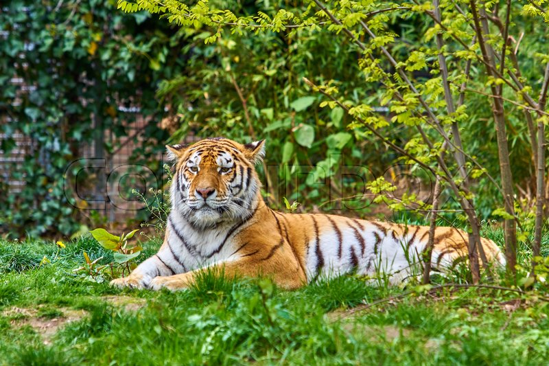
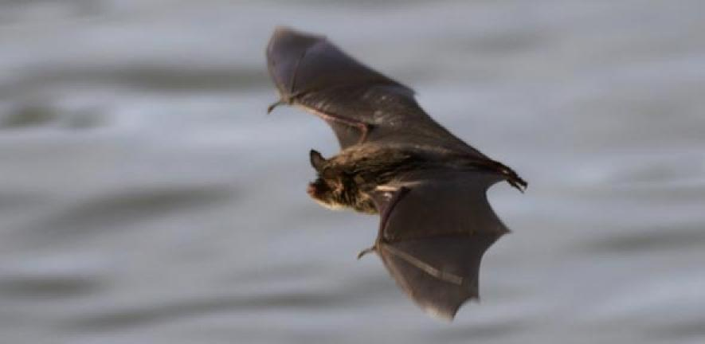
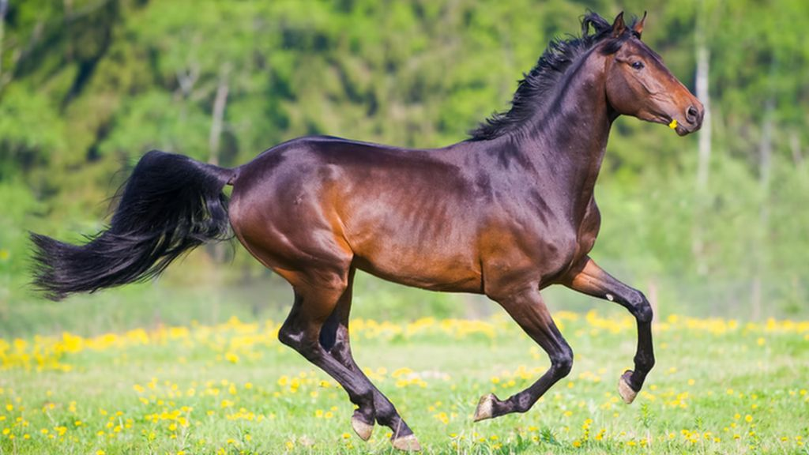

The duck-billed platypus is considered one of the most unique animals on Earth, as it is the only mammal that lays eggs. It finds food by feeling and detecting electric signals.

Lemurs are animals native to Madagascar, and their height ranges between 2.5 inches and 2.5 feet tall. They are the only primates with blue eyes.

Unlike other cats, tigers are grood swimmers and actually like te water. The most common type of tiger is the bengal tiger. In the wild, tigers usually live up till 20-26 years old.
Dogs are domesticated carnivores that can be kept as pets by humans. They have been trained for many purposes, such as helping the police, emotional support, and even helping bilnd people. There is close to 360 breeds.

Bats can live up till more than 30 years, and fly till speeds of 60 mph (miles per hour). They use echo-location to find their food in total darkness.

We have used horses in many ways to help us for over 5000 years. Domestic horses are said to have a lifespan of around 25 years. They have around 205 bones in their body.